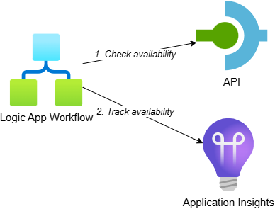
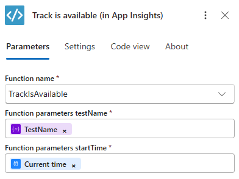
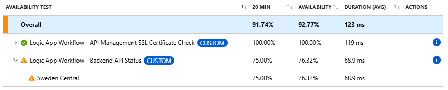

Track Availability in Application Insights using Logic App Workflow

In my previous post, I showed you how to create custom availability tests using .NET and Azure Functions. While that solution gives you full control over the test logic and enables complex scenarios, it requires writing and maintaining code.
I’ve worked with clients following a low-code first strategy where Logic Apps are preferred over high-code solutions like .NET Azure Functions. For those cases, I’ve created a solution where a Logic App (Standard) workflow can be used as an availability test. It still has a bit of code to track the results in Application Insights, but most logic can be created in the workflow itself, meaning you can use all the features that Logic Apps provide.
Additionally, if you already have a Logic App deployed you don’t have to deploy additional resources like a Function App and App Service Plan (depending on your hosting model and tier), which could increase costs. But there are some considerations to keep in mind related to costs, which I discuss later in this post.
This is the third post in a series about tracking availability in Application Insights:
- Track Availability in Application Insights using Standard Test
- Track Availability in Application Insights using .NET (Azure Function)
- Track Availability in Application Insights using Logic App Workflow - this post
Table of Contents
- Solution Overview
- Backend Availability Test Workflow
- SSL Certificate Validation Workflow
- Viewing Availability Test Results
- Setting Up Alerts
- Considerations
- Conclusion
Solution Overview
The solution includes the following components:

- Logic App (Standard) workflow: Timer-triggered workflow that executes the availability test and tracks the result in Application Insights using custom functions
- API: Represents a backend system for which we want to track availability. It randomly returns a 200 OK or 503 Service Unavailable response based on a configurable ‘approximate failure percentage’
- Application Insights: Receives the custom availability telemetry and shows the test results
While this example uses an API on API Management, the same approach applies when calling any other backend system for which you want to track availability. You can also use other Logic App connectors besides HTTP, like calling a function in SAP using an SAP-specific connector.
To make deployment easier, I’ve created an Azure Developer CLI (azd) template: Track Availability in Application Insights. The template demonstrates three scenarios for tracking availability: standard test (webtest), .NET Azure Function and Logic App workflow. If you want to deploy and try the solution, check out the getting started section for the prerequisites and deployment instructions. This post focuses on the Logic App implementation.
Backend Availability Test Workflow
The first workflow performs a simple HTTP GET request to check if the backend API is available. Here’s what the workflow looks like in the designer:

The workflow needs to be stateful because it uses the Recurrence trigger, which is only available for stateful workflows. It is structured as follows:
- Recurrence trigger: Executes the workflow every minute
- Initialize TestName: Sets a variable with the test name that will be used when tracking availability
- Start time: Captures the current timestamp to track the start time and test duration
- HTTP action: Makes a GET request to the
/backend/statusendpoint in API Management - Conditional branching: Depending on the response status code:
- If successful (200 OK), the
Track is available (in App Insights)action is called - If failed (any other status), the
Track is unavailable (in App Insights)action is called
- If successful (200 OK), the
This workflow demonstrates an advantage of using Logic Apps: most of the logic is visual and doesn’t require coding. You can easily modify the HTTP request, add authentication or include additional steps using the workflow designer.
The logic to track availability in Application Insights is implemented in C# using a Logic App with custom code project, which lets you deploy .NET code directly to the Logic App without additional resources like a Function App. I’ve created functions similar to what I showed in the previous post, but packaged as Logic App custom functions.
I started on a custom connector, but the deploy size went from several KBs to hundreds of MBs. So I decided to use a custom code project instead because the size then increases to only ~600KB.
The following image shows the use of the TrackIsAvailable function in the Track is available (in App Insights) action:

The function takes the test name and start time as parameters and tracks a successful availability test. The TrackIsUnavailable function tracks a failure and takes an additional parameter for the error message.
Here’s the implementation from AvailabilityTestFunctions.cs with both functions:
public class AvailabilityTestFunctions
{
private readonly TelemetryClient _telemetryClient;
private readonly ILogger<AvailabilityTestFunctions> _logger;
public AvailabilityTestFunctions(TelemetryClient telemetryClient, ILoggerFactory loggerFactory)
{
_telemetryClient = telemetryClient;
_logger = loggerFactory.CreateLogger<AvailabilityTestFunctions>();
}
[Function("TrackIsAvailable")]
public Task TrackIsAvailable([WorkflowActionTrigger] string testName, DateTimeOffset startTime)
{
_logger.LogInformation("TrackIsAvailable function invoked with testName: {TestName}, startTime: {StartTime}", testName, startTime);
return TrackAvailability(testName, true, startTime, null);
}
[Function("TrackIsUnavailable")]
public Task TrackIsUnavailable(
[WorkflowActionTrigger] string testName,
DateTimeOffset startTime,
string message)
{
_logger.LogInformation("TrackIsUnavailable function invoked with testName: {TestName}, startTime: {StartTime}, message: {Message}", testName, startTime, message);
return TrackAvailability(testName, false, startTime, message);
}
public Task TrackAvailability(
[WorkflowActionTrigger] string testName,
bool success,
DateTimeOffset startTime,
string message)
{
ArgumentException.ThrowIfNullOrWhiteSpace(testName, nameof(testName));
AvailabilityTelemetry availability = new()
{
Name = testName,
RunLocation = Environment.GetEnvironmentVariable("REGION_NAME") ?? "Unknown",
Success = success,
Message = message,
Timestamp = startTime,
Duration = DateTimeOffset.UtcNow - startTime
};
// Create activity to enable distributed tracing and correlation of the telemetry in App Insights
using (Activity activity = new("AvailabilityContext"))
{
activity.Start();
// Connect the availability telemetry to the logging activity
availability.Id = activity.SpanId.ToString();
availability.Context.Operation.ParentId = activity.ParentSpanId.ToString();
availability.Context.Operation.Id = activity.RootId;
_telemetryClient.TrackAvailability(availability);
_telemetryClient.Flush();
}
return Task.CompletedTask;
}
}
The AvailabilityTestFunctions class provides two public functions that can be called from workflows:
- TrackIsAvailable: Tracks a successful availability test by calling
TrackAvailabilitywithsuccessset totrue - TrackIsUnavailable: Tracks a failed test by calling
TrackAvailabilitywithsuccessset tofalseand includes an error message
The TrackAvailability method does the actual work:
- Creates an
AvailabilityTelemetryobject with the test results including the run location (retrieved from an environment variable) - Calculates the test duration by subtracting the start time from the current time
- Creates an
Activityto enable distributed tracing and correlation of telemetry in Application Insights - Sets various IDs on the availability telemetry to enable end-to-end correlation
- Publishes the telemetry to Application Insights using the
TelemetryClient
The TelemetryClient is registered in the Startup.cs of the Logic App’s custom code project. The ILoggerFactory is already registered by the Logic App runtime.
I could have created a single function that performed both the HTTP GET and tracked the (un)availability of the backend, which would look similar to what I describe in my previous post. But I decided to only put the ‘track availability’ code in functions to visualize the logic and so other logic can rely on the Logic App capabilities. For example, using a managed identity to call a backend is super easy in a workflow, as I describe in my post Call OAuth-Protected APIs with Managed Identity from Logic Apps.
SSL Certificate Validation Workflow
Similar to my previous posts, I’ve also created a separate availability test to check the SSL server certificate of API Management. Here’s what this workflow looks like in the designer:

The workflow is structured as follows:
- Recurrence trigger: Executes the workflow every minute
- Initialize TestName: Sets a variable with the test name
- Start time: Captures the current timestamp
- Get APIM SSL server certificate expiration in days: Calls a custom function to retrieve the number of days until the certificate expires
- Conditional branching: Depending on the expiration days:
- If the certificate expires soon or has expired (less than or equal to the configured threshold), the workflow:
- Tracks the test as unavailable in Application Insights, including the number of remaining days in the error message
- Terminates with a failed status
- If the certificate is still valid (more than the threshold days remaining), the workflow tracks the test as available
- If the certificate expires soon or has expired (less than or equal to the configured threshold), the workflow:
- Error handling: If determining the expiry fails, the test is tracked as unavailable
The GetSslServerCertificateExpirationInDays function retrieves the SSL certificate of a host and calculates how many days remain until it expires. Here’s the implementation from SslServerCertificateFunctions.cs:
[Function("GetSslServerCertificateExpirationInDays")]
public async Task<int> GetSslServerCertificateExpirationInDays(
[WorkflowActionTrigger] string hostname,
int port)
{
_logger.LogInformation("GetSslServerCertificateExpirationInDays function invoked with hostname: {Hostname}, port: {Port}", hostname, port);
try
{
// Connect client to remote TCP host using provided hostname and port
using var tcpClient = new TcpClient();
await tcpClient.ConnectAsync(hostname, port);
// Create an SSL stream over the TCP connection and authenticate with the server
// This will trigger the SSL/TLS handshake and allow us to access the server's certificate
using var sslStream = new SslStream(tcpClient.GetStream());
await sslStream.AuthenticateAsClientAsync(hostname);
// Retrieve the remote server's SSL certificate from the authenticated connection
var certificate = sslStream.RemoteCertificate;
if (certificate != null)
{
// Calculate the remaining lifetime of the certificate in days
var x509Certificate = new X509Certificate2(certificate);
return (x509Certificate.NotAfter - DateTime.UtcNow).Days;
}
// Throw an exception if no certificate was found
throw new Exception($"No SSL server certificate found for host {hostname} on port {port}");
}
catch (Exception ex) {
_logger.LogError(
ex, "Error retrieving SSL server certificate expiration for host {Hostname} on port {Port}: {Exception}",
hostname, port, ex.ToString());
throw;
}
}
The function performs the following steps:
- Connects to the remote host using a
TcpClientwith the provided hostname and port - Creates an
SslStreamover the TCP connection to establish an SSL/TLS handshake - Authenticates with the server using
AuthenticateAsClientAsync, which retrieves the server’s certificate - Extracts the certificate’s expiration date and calculates the remaining days until expiry
- Returns the number of days or throws an exception if the certificate couldn’t be retrieved
Note that I’m explicitly logging the exception in the catch block because I’ve noticed that the Logic App’s end-to-end transaction details don’t show exception details like the message or stack trace. By explicitly logging the error, the information is captured in Application Insights and available when troubleshooting issues.
Viewing Availability Test Results
After deploying the availability tests, you can view the results in the same places as standard tests and Azure Function tests. Navigate to your Application Insights resource and select “Availability” from the left menu:

As with the Azure Function tests, the Logic App workflow tests have the CUSTOM label, indicating they are custom TrackAvailability tests rather than standard web tests. They also don’t have the edit, disable and … buttons because there is no web test resource in Azure associated with them.
When you expand a test to see detailed results, you’ll notice that we only have results from one region:

This is because we’re executing the availability test from a Logic App deployed in a single region. If you need multi-region testing with custom tests, you would deploy the Logic App to multiple regions.
When you drill into the details of a specific test result, you can view the end-to-end transaction details:

The end-to-end transaction view shows the correlation between the Logic App workflow execution, the HTTP request to API Management and the availability test result. The timeline is a bit ‘messy’ compared to the Azure Function implementation because of the way the workflow tracks the availability result as a separate action after the HTTP call is performed. However, all the telemetry is properly correlated, allowing you to trace the complete flow.
Setting Up Alerts
Setting up alerts for Logic App-based availability tests works the same as for Azure Function-based tests. For more details, see the Setting Up Alerts section of the previous post.
Considerations
While Logic App workflows provide a great low-code solution for availability testing, there are some considerations to keep in mind:
This solution can save costs but can also have additional costs compared to running your availability tests in Azure Functions. If you have an existing Logic App (Standard) hosted on a Workflow Service Plan, you can’t deploy a Function App on the same plan. So, if you don’t have a Function App deployed yet, using Logic App workflows can save costs because you don’t have to deploy additional resources.
On the other hand, the availability test workflows need to be stateful because of the Recurrence trigger. If you have diagnostic settings enabled on your Logic App and Storage Account, you’ll incur additional costs. I deployed the sample template with and without diagnostic settings and let the tests run for a day. The costs were almost €1.50 higher, primarily from “Analytics Logs Data Ingestion” for the Storage Account, which was about 56% of the total Log Analytics usage.
Considering that we have two tests running every minute, if you extrapolate that to a month, the additional cost would be around €15 - €20 per test. This is similar to the cost of a standard availability test in Application Insights (if you ignore the Logic App resource costs). These expenses can accumulate if you have many tests running across multiple environments.
If you enabled the diagnostic settings on the storage account primarily for logging on your own queues, containers, etc. rather than the ones the Logic App creates, you could reduce costs by using separate storage accounts. Create your custom resources in a storage account with diagnostic settings enabled while keeping the storage account used by the Logic App without diagnostic settings.
Another approach to reduce costs is to run the availability tests less frequently in development and test environments. This means configuring the Recurrence trigger with interval and frequency values loaded from app settings (environment variables). At the moment, you can’t configure this directly in the Logic App designer. You can configure it in the code view instead. Luis Rigueira has a great post about this: Dynamic Logic App Schedules: Using Environment Variables.
If you expect to create multiple availability tests, consider creating a generic workflow with an HTTP trigger that takes the test name and the URL to test. That workflow will perform the HTTP GET and track the availability. You can then create a simplified workflow per availability test that has the Recurrence trigger and calls the generic workflow with the correct test name and URL. I’ve used this in one of my own projects and it works great.
Conclusion
Logic App workflows provide a good option for implementing custom availability tests, especially when working in organizations with a low-code first strategy. The approach combines the flexibility of custom code for tracking availability in Application Insights with the visual, low-code nature of Logic App workflows for the actual testing logic.
The key benefits include:
- Visual workflow design that’s easy to understand and maintain
- Access to all Logic App connectors and capabilities
- Minimal custom code required (only for tracking availability)
- Potential cost savings if you already have a Logic App deployed, but beware of stateful workflow costs in combination with diagnostic settings (as mentioned in the considerations)
While there are some limitations around configuration and multi-region testing, the Logic App approach offers a practical solution for many availability testing scenarios. The generic custom functions I’ve shown can be reused across multiple workflows, making it straightforward to add new availability tests as needed.
For organizations committed to low-code solutions or those already using Logic Apps, this approach provides a natural way to implement custom availability monitoring without requiring extensive .NET development expertise.